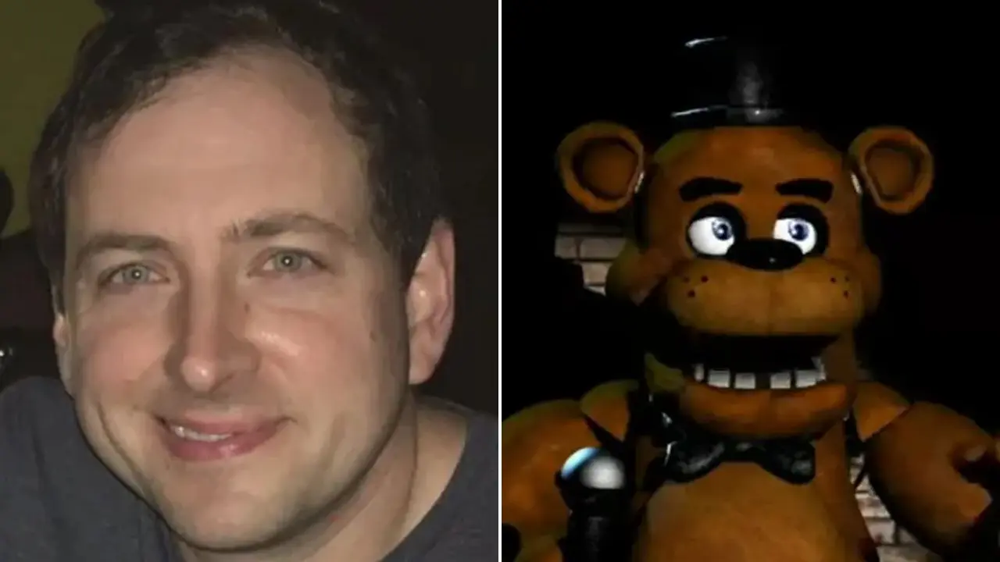

scott cawthon keluar dari industri game
Berita mengejutkan datang dari pencipta Five Nights at Freddy’s yakni Scott Cawthon yang telah mengumumkan jika dia akan pensiun.

Berita mengejutkan datang dari pencipta franchise Five Nights at Freddy’s yakni Scott Cawthon yang telah mengumumkan jika dia akan pensiun.
Bagi kalian penggemar game horor tentunya sudah tidak asing lagi dengan seri game Five Nights at Freddy’s ini.
Game ini hadir dengan tema unik dan cerita yang misterius sehingga membuat banyak penggemar terus membicarakannya.
Melalui situs pribadi miliknya, Cawthon menulis, “Saya menyadari bahwa saya kehilangan banyak hal yang harus saya fokuskan sebelum Five Nights at Freddy’s menjadi begitu sukses. Saya rindu membuat game untuk anak-anak saya. Saya rindu melakukannya hanya untuk bersenang-senang, dan saya rindu membuat RPG meskipun saya tidak handal. Semua ini untuk mengatakan bahwa saya pensiun.”
Pengumuman pensiunnya Scott Cawthon ini terjadi tidak lama usai terdapat pembicaraan tentang dana donasi yang ia berikan untuk mantan presiden Amerika Serikat, Donald Trump.
Saat ini Scott Cawthon sendiri juga sudah memiliki usia 40 tahun dan ia juga memiliki beberapa anak sehingga ini juga bisa menjadi alasan kenapa ia ingin pensiun dan fokus kepada keluarganya sendiri.
Dia melanjutkan untuk memuji dukungan dari penggemar Five Nights at Freddy’s. “Saya telah menunjukkan cinta dan dukungan yang luar biasa selama minggu terakhir ini, banyak yang datang dari komunitas LGBTQ,” kata Cawthon. “Kebaikan yang ditunjukkan kepada saya sangat nyata.”